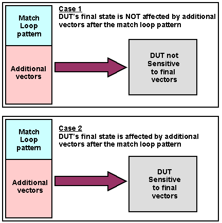
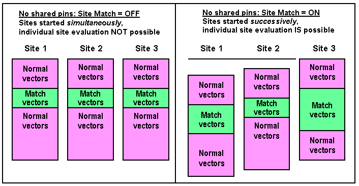

Considerations for Match Loops
A match-loop is a sequence of vectors executed in a continuous loop, used to put a DUT without a reset pin into a state required for a particular test. The general principle is to specify a sequence of vectors that are executed in a loop and, if repeated often enough, put the DUT successively into each of its possible states. After each repetition, it is checked if the desired state has been reached. If so, the loop is terminated. If not, it is repeated.
There are two basic scenarios that determine how to best set up a multisite test flow using match loops.
1. Your DUTs are not concerned with being fed with vectors from additional match loop passes. In other words, their final state is not affected by receiving superfluous patterns after receiving the match loop pattern, or their final state is no longer important.
A typical application here could be where a DUT needs to settle to a certain state which is not affected by further patterns, for example, locking a phase locked loop.
2. Your DUTs are sensitive to being fed with vectors from additional match loop passes. In other words their final state is affected by receiving superfluous patterns after receiving the match loop pattern and you wish to continue testing the DUT without re-setting it.
A typical application could be setting up the final state of a shift register where the final state is affected by further patterns.
The following figure shows these two cases.

If your DUT is not sensitive to receiving superfluous vectors, as in case 1, you can set the Site Match flag to OFF which will allow you to start all sites simultaneously (see Site Match Disabled with Shared Resources).
However, if the site match flag is set to OFF, then the judgment on whether a match has been obtained will be based on the compare results of all active sites, so that if the match loop fails on one single site, the test will be canceled for all sites even if a match is found for all the remaining sites.
If your DUT is sensitive to superfluous patterns, as in case 2, you will need to set the Site Match flag to ON. This will allow you to evaluate the match loop for each site independently (see Site Match Enabled with Shared Resources).
However, if the site match flag is set to ON, then each site will be started with a small offset which can cause problems if you wish to use a digital channel, for example, to trigger analog devices on different sites at a specific instant of time ( see Controlling Site Synchronization).
If a test flow contains both match loops and shared pins, but not within the same test suite, you can configure site synchronization individually for each test suite with the Site Match test suite flag.
Setting the flag to:
- ON will cause all sites to be started not simultaneously, but allows you to evaluate sites independently.
- OFF will cause the sites to start simultaneously, but all sites will be evaluated together.
If match loops are to be combined with shared pins in the same test suite of a multisite test flow, you need to switch the Site Match test suite flag to OFF. This has the effect that match loops can no longer be evaluated independently by site.
The figure below shows schematically how a match loop is executed for two sites in this case.

If the currently active pattern does not match on all sites, a timeout of the digital sequencer will occur. As such a timeout is a global state, it will also stop all other currently active sites. In addition to this undesirable effect, any form of timeout is a waste of test time.
To avoid this happening, it is recommended to set up your test to use "Counted match loops" which avoids this behavior.
The following sections give some solutions to specific situations that you may encounter when using match loops in multisite test flows.
Functional changes
- Introduced before SmarTest 6.3.2